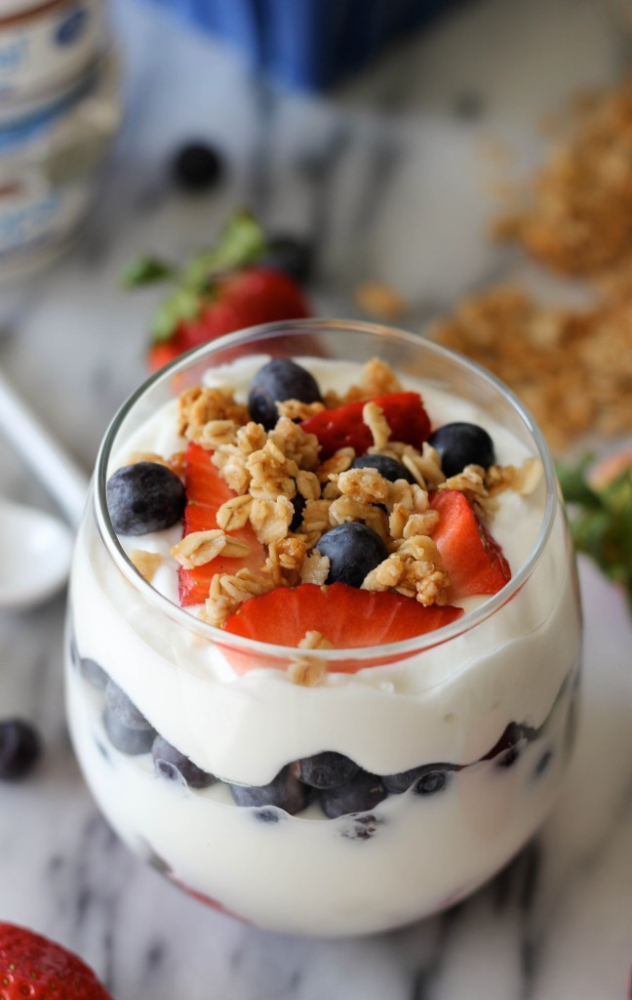

Twilight Delight

Description
This is a recipe for Twilight-esque dreams as your body and belly thank
you for this optimal nutritional delight.
Ingredients
- 3/4 - 1 Cup of Delicious Greek Yogurt
- A Splash of your favorite milk or milk alternative
- 1 Teaspoon of Salt
- 1/2 -1 Banana
- A Small handful of Blueberries
- 1-2 Teaspoons of your favorite Jam/Preserves
- 1-2 Tablespoons of Peanut Butter
- 1-2 Tablespoons of Chia Seeds
Steps
- Scoop Greek Yogurt into bowl of your choice.
- Splash your Milk or Milk alternative onto Yogurt
- Add Salt, Banana, Blueberries, Jam/Preserves, Peanut Butter, and Chia Seeds.
- Mash everything together
- Enjoy and revel in the Delightful Twilight Bliss that you have just created for yourself!